rIdx = FileAttachment("attachments/261015_ca1073_raw/index.csv").csv({typed: true})
info = FileAttachment("attachments/261015_ca1073_03.json").json()
RC = ({사건: "#eb6834", 대조: "#2a78d6", 없음: "#b5b3ab", ink: "#0b0b0b", surface: "#fcfcf7"})
RUNIT = ({에어코리아: "PM2.5 (µg/m³)", OpenAQ: "PM2.5 (µg/m³)", WEIS: "DO (mg/L)", USGS: "DO (mg/L)", "기상청 ASOS ①": "기온 (°C)", "기상청 ASOS ②": "기온 (°C)", "NOAA ISD": "기온 (°C)"})
rUnit = d => d.자료 === "EPA AQS" ? (d.series.endsWith("_o3") ? "O3 (ppm)" : "PM2.5 (µg/m³)") : RUNIT[d.자료]
ymd = d => `${d.getUTCFullYear()}-${String(d.getUTCMonth() + 1).padStart(2, "0")}-${String(d.getUTCDate()).padStart(2, "0")}`
dayIndex = (s, d0) => Math.round((Date.parse(s + "T00:00:00Z") - Date.parse(d0 + "T00:00:00Z")) / 864e5)
RLAB = ({"1": "사건", "0": "대조", ".": "없음"})
fd = x => x instanceof Date ? ymd(x) : String(x)FDecomp 실자료 결과
박민수 교수 문서 (Real_Data_DecompFPCA.docx) 의 자료 여덟 가지에 지난 리포트 (vic_elec) 의 절차를 그대로 돌림. 지점은 문서 범위 안의 것을 전부 받았고, 라벨은 문서의 군집화 라벨대로 날마다 하나씩 만듦. 값은 ARI (k-means, k = 2). 설계 이름은 지난 리포트의 절 번호 — §3.1 일평균 (상한 = 라벨을 보고 고른 일평균 임계) · §3.2 B-스플라인 → FPCA · §5.1 분해 → 보정 → MFPCA.
1. 원자료 보기
자료 · 지점 · 기간을 고르면 그 기간의 시간 단위 원자료를 그림. 바탕색은 그날의 라벨 (사건 · 대조, 빈칸은 라벨 없음) — 라벨은 날마다 하나라 하루 (현지 표준시 0 – 24시) 가 한 색. 라벨은 그린 값이 아니라 문서의 기준 (주의보 · AQI · 조류경보 · 유량 · 날씨) 으로 정함 — 예를 들어 에어코리아 사건은 «그 권역에 주의보 · 경보가 걸친 날» 이라 밤에 내려 이튿날 아침에 풀린 주의보는 이틀이 다 사건. 실은 지점 — 작은 자료 (ASOS · OpenAQ · WEIS · ISD) 는 센 지점 전부, 큰 자료 (에어코리아 · EPA · USGS) 는 시도 · 주마다 사건 · 대조가 가장 고른 지점부터 30곳 (모두 172곳).
고른 기간의 하루 곡선 — 가는 선은 하루, 굵은 선은 라벨마다의 평균.
2. 성능 요약
요약
- 받은 지점 2,410곳 중 2,101곳을 셈. 못 센 309곳은 라벨 부족 261 (EPA 156 · WEIS 68 · 에어코리아 20 · USGS 14 · ISD 3) · 자료 없음 48 (EPA 47 · 에어코리아 1).
- 자료마다 평균이 가장 높은 것은 여덟 중 일곱이 3.1 상한 (라벨을 보고 고른 일평균 임계라 상한). 라벨이 농도 · 기온의 문턱으로 정해진 에어코리아 (주의보, 0.796) · EPA (AQI, 0.610) · 폭염 (일최고 33 °C, 0.798) 에서 특히 큼. 예외는 기상청 ASOS ② (맑음 vs 비 · 흐림) 하나로 §5.1 VMD 0.413 이 3.1 상한 0.066 보다 높음.
- 라벨을 보지 않는 §3.2 · §5.1 끼리는 VMD 가 넷에서 가장 높음 (USGS 0.134 · WEIS 0.133 · ISD 0.358 · ASOS ② 0.413). 에어코리아는 EEMD 0.524 · CEEMDAN 0.514 · FPCA 0.512 가 비슷하고 VMD 는 0.260. OpenAQ 두 곳은 EEMD 0.480 이 가장 높고 VMD 0.244 이 가장 낮음. EPA · 폭염은 다섯 모두 0.1 아래.
자료와 라벨
| 자료 | 지점 (받음 / 셈) | 변수 · 간격 | 기간 | 문서의 라벨 | 판정 규칙 |
|---|---|---|---|---|---|
| 에어코리아 | 676 / 655 | PM2.5 (µg/m³) · 1시간 | 2021–2025 | 대기 정체 · 고농도 미세먼지 주의보 발령일 vs 청정 대기 확산 · 강수일 | 1 = 그 권역 PM2.5 주의보 · 경보가 걸친 날 / 0 = 그 밖의 날 중 그 권역 PM2.5 예보 (당일 최종 발표) 가 «좋음» 이거나 가까운 ASOS 일강수 ≥ 1 mm 인 날 |
| EPA AQS | 1,018 / 815 | PM2.5 (µg/m³) · O3 (ppm) · 1시간 | 2021–2025 | AQI USG 이상 vs Good · Moderate | 1 = 카운티 일 AQI ≥ 101 이고 그 물질이 AQI 를 정한 날 / 0 = 카운티 일 AQI 가 Good · Moderate 인 날 |
| OpenAQ | 2 / 2 | PM2.5 (µg/m³) · 1시간 | 2024–2025 | (라벨 없음) | LA: EPA 규칙 (LA 카운티 · PM2.5) / 서울 종로구: 에어코리아 규칙 |
| WEIS | 77 / 9 | DO (mg/L) · 1시간 | 2021–2025 | 조류경보제 발령 기간 vs 평상시 정상일 | 1 = 대응하는 조류경보 지점의 경보 (관심 이상) 기간 / 0 = 경보가 아님이 확인된 날 (모든 달). 대응하는 경보 지점이 없는 곳은 라벨 없음 |
| USGS | 563 / 549 | DO (mg/L) · 1시간 평균 | 2021–2025 | 강우 유출 · 홍수 유입일 vs 기저 유출 평수기 | 일유량을 Lyne–Hollick 필터 (α 0.925, 앞 · 뒤 · 앞) 로 기저 유출과 직접 유출 D 로 나눔. 1 = D / Q ≥ 0.5 / 0 = D / Q ≤ 0.1 이고 유량이 지점 P25 – P75 |
| 기상청 ASOS ① | 7 / 7 | 기온 (°C) · 1시간 | 2021–2025 | 폭염 · 열대야 발생일 vs 비폭염 정상일 | 1 = 기상청 공식 폭염일 (일최고 ≥ 33 °C) 또는 열대야일 (18:01 – 익일 09:00 최저 ≥ 25 °C) / 0 = 둘 다 아닌 날 |
| 기상청 ASOS ② | 7 / 7 | 기온 (°C) · 1시간 | 2021–2025 | 청명일 (맑음) vs 강우 · 운량 8 이상 흐린 날 | 1 = 일강수 ≥ 0.1 mm 또는 일평균 전운량 ≥ 8 / 0 = 일평균 전운량 0 – 5 (기상청 하늘상태 «맑음») 이고 강수 보고가 없는 날 |
| NOAA ISD | 60 / 57 | 기온 (°C) · 1시간 | 2021 – 2025-08 | 고온 건조 기후일 vs 한랭 전선 통과 · 강수일 | 1 = 강수 ≥ 1 mm 또는 한랭 전선 통과 (일평균 기온이 전날보다 5 °C 이상 내리고 일평균 해면기압이 3 hPa 이상 오름) / 0 = 강수 0 · 일최고 ≥ 지점 P75 · 일평균 습도 ≤ 지점 중앙값 |
- 쓴 날: 하루 24점이 다 관측되고 라벨이 있는 날. 시각은 현지 표준시. 분해는 처음 – 끝 관측 사이의 통째 신호에 걺 (빈 시각은 선형 보간).
- 못 센 지점: «라벨 부족» = 쓴 날이 10일 미만이거나 한쪽 라벨만 있는 지점, «자료 없음» = 관측이 2점 미만인 지점. 수만 적음.
자료마다 평균
- 센 지점의 평균 ARI. 빨강 = 줄에서 가장 높은 값 (0.2 넘을 때). 지점마다의 값과 지도는 아래 «지점마다».
| 자료 | 센 지점 | 3.1 상한 | 3.2 FPCA | 5.1 VMD | 5.1 CEEMDAN | 5.1 EEMD | 5.1 EMD |
|---|---|---|---|---|---|---|---|
| 에어코리아 | 655 | \(\color{red}{0.796}\) | 0.512 | 0.260 | 0.514 | 0.524 | 0.469 |
| EPA AQS | 815 | \(\color{red}{0.610}\) | 0.076 | 0.077 | 0.074 | 0.083 | 0.061 |
| OpenAQ | 2 | \(\color{red}{0.878}\) | 0.419 | 0.243 | 0.335 | 0.480 | 0.402 |
| WEIS | 9 | 0.163 | 0.064 | 0.133 | 0.044 | 0.033 | 0.026 |
| USGS | 549 | \(\color{red}{0.214}\) | 0.095 | 0.134 | 0.096 | 0.088 | 0.078 |
| 기상청 ASOS ① | 7 | \(\color{red}{0.798}\) | 0.059 | 0.001 | 0.073 | 0.073 | 0.045 |
| 기상청 ASOS ② | 7 | 0.066 | 0.192 | \(\color{red}{0.413}\) | 0.199 | 0.188 | 0.162 |
| NOAA ISD | 57 | \(\color{red}{0.504}\) | 0.253 | 0.358 | 0.255 | 0.269 | 0.263 |
| 전체 | 2,101 | \(\color{red}{0.559}\) | 0.222 | 0.158 | 0.222 | 0.227 | 0.198 |
분포 — 지점이 많은 자료
- 평균 · 중앙값 · 아래 / 위 25% · 줄에서 가장 높은 지점 수 (같은 값이면 모두 셈) · 상한을 빼고 가장 높은 지점 수.
| 3.1 상한 | 3.2 FPCA | 5.1 VMD | 5.1 CEEMDAN | 5.1 EEMD | 5.1 EMD | |
|---|---|---|---|---|---|---|
| 평균 | \(\color{red}{0.796}\) | 0.512 | 0.260 | 0.514 | 0.524 | 0.469 |
| 중앙값 | \(\color{red}{0.801}\) | 0.695 | 0.161 | 0.677 | 0.688 | 0.655 |
| 아래 25% | \(\color{red}{0.764}\) | 0.057 | 0.007 | 0.077 | 0.097 | 0.044 |
| 위 25% | \(\color{red}{0.835}\) | 0.761 | 0.528 | 0.756 | 0.762 | 0.750 |
| 줄에서 가장 높은 지점 수 | 626 | 12 | 3 | 19 | 17 | 19 |
| 상한을 빼고 가장 높은 지점 수 | — | 268 | 14 | 190 | 200 | 153 |
| 3.1 상한 | 3.2 FPCA | 5.1 VMD | 5.1 CEEMDAN | 5.1 EEMD | 5.1 EMD | |
|---|---|---|---|---|---|---|
| 평균 | \(\color{red}{0.610}\) | 0.076 | 0.077 | 0.074 | 0.083 | 0.061 |
| 중앙값 | \(\color{red}{0.602}\) | 0.011 | 0.010 | 0.010 | 0.015 | 0.009 |
| 아래 25% | \(\color{red}{0.386}\) | 0.001 | 0.002 | 0.001 | 0.002 | 0.000 |
| 위 25% | \(\color{red}{0.881}\) | 0.063 | 0.056 | 0.052 | 0.069 | 0.043 |
| 줄에서 가장 높은 지점 수 | 797 | 4 | 10 | 9 | 11 | 11 |
| 상한을 빼고 가장 높은 지점 수 | — | 195 | 231 | 134 | 250 | 155 |
| 3.1 상한 | 3.2 FPCA | 5.1 VMD | 5.1 CEEMDAN | 5.1 EEMD | 5.1 EMD | |
|---|---|---|---|---|---|---|
| 평균 | \(\color{red}{0.214}\) | 0.095 | 0.134 | 0.096 | 0.088 | 0.078 |
| 중앙값 | 0.173 | 0.028 | 0.068 | 0.030 | 0.026 | 0.026 |
| 아래 25% | 0.085 | 0.000 | -0.001 | 0.000 | 0.001 | 0.001 |
| 위 25% | \(\color{red}{0.307}\) | 0.117 | 0.234 | 0.112 | 0.112 | 0.101 |
| 줄에서 가장 높은 지점 수 | 347 | 21 | 123 | 30 | 26 | 19 |
| 상한을 빼고 가장 높은 지점 수 | — | 81 | 244 | 90 | 71 | 100 |
| 3.1 상한 | 3.2 FPCA | 5.1 VMD | 5.1 CEEMDAN | 5.1 EEMD | 5.1 EMD | |
|---|---|---|---|---|---|---|
| 평균 | \(\color{red}{0.504}\) | 0.253 | 0.358 | 0.255 | 0.269 | 0.263 |
| 중앙값 | \(\color{red}{0.401}\) | 0.097 | 0.281 | 0.101 | 0.088 | 0.104 |
| 아래 25% | \(\color{red}{0.341}\) | 0.039 | 0.180 | 0.024 | 0.040 | 0.047 |
| 위 25% | \(\color{red}{0.651}\) | 0.324 | 0.451 | 0.330 | 0.452 | 0.350 |
| 줄에서 가장 높은 지점 수 | 47 | 2 | 5 | 3 | 3 | 0 |
| 상한을 빼고 가장 높은 지점 수 | — | 4 | 32 | 5 | 12 | 8 |
지점마다
문서의 라벨 (사건 vs 대조) 로 지점마다 따로 군집. 받은 지점 2,410곳 중 2,101곳을 셈 — 못 센 곳은 라벨 부족 (쓴 날 10일 미만이거나 한쪽 라벨만) · 자료 없음 (관측 2점 미만). 지도에서 속이 빈 점이 못 센 지점.
3. 보정 성분 이후 결과
지난 리포트 §5.1 그림 꼴을 실자료에 그림 — 줄마다 한 분해 방법 (VMD · CEEMDAN · EEMD · EMD), 칸은 왼쪽부터 원곡선 · 보정 성분 넷 (1 · 2 · 3 · 4+ cycles/day, 괄호는 칸 에너지 비율) · MFPCA 점수 (참 라벨) · k-means (k = 2) 군집과 ARI. 자료마다 사건 · 대조가 가장 고른 지점 하나 (둘 중 적은 쪽의 날 수가 가장 많은 곳). 모든 지점의 ARI 는 2절 «지점마다».
- 색 — 회색 = 대조 · 파랑 = 사건 (맨 윗줄 범례는 자료 파일의 라벨 이름), 군집은 주황 · 초록.
수지 (경기도) — PM2.5 · 사건 «주의보» 77일 / 대조 «청정 · 강수» 812일 · ARI — 3.1 상한 0.808 · 3.2 FPCA 0.719 · 5.1 VMD 0.626 · 5.1 CEEMDAN 0.726 · 5.1 EEMD 0.701 · 5.1 EMD 0.742
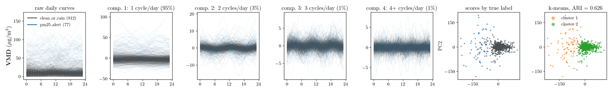
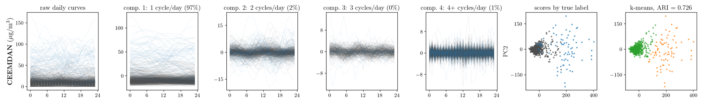
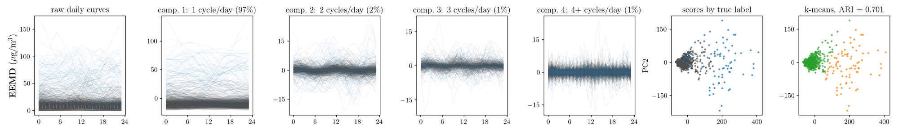
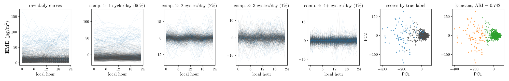
Redlands (California / Riverside-San Bernardino-Ontario, CA) — O3 · 사건 «AQI USG 이상» 579일 / 대조 «Good · Moderate» 1136일 · ARI — 3.1 상한 0.582 · 3.2 FPCA 0.655 · 5.1 VMD 0.611 · 5.1 CEEMDAN 0.665 · 5.1 EEMD 0.657 · 5.1 EMD 0.692

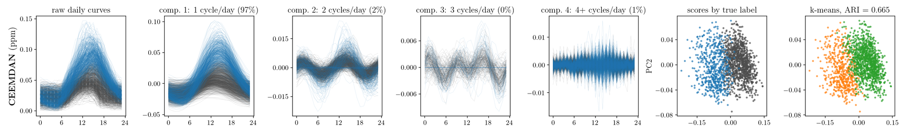
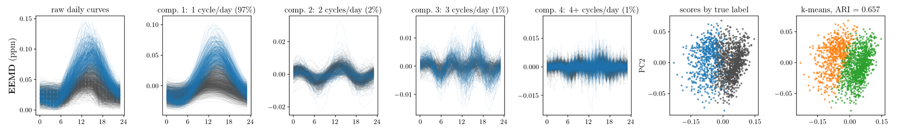

Los Angeles – N. Main (California / Los Angeles-Long Beach-Anaheim, CA) — PM2.5 · 사건 «AQI USG 이상» 24일 / 대조 «Good · Moderate» 436일 · ARI — 3.1 상한 0.903 · 3.2 FPCA 0.203 · 5.1 VMD 0.203 · 5.1 CEEMDAN 0.203 · 5.1 EEMD 0.203 · 5.1 EMD 0.203
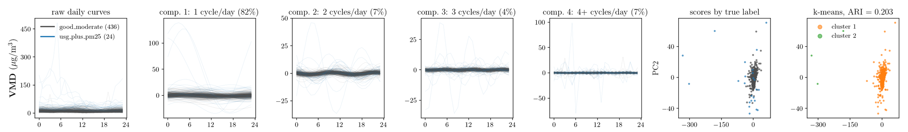
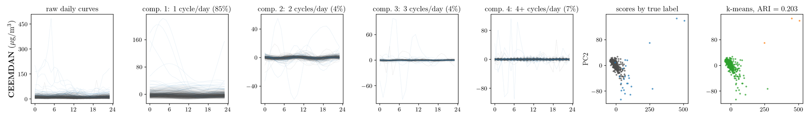
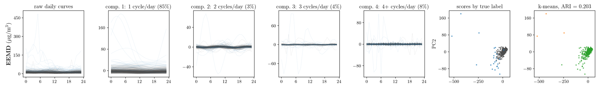
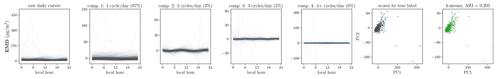
칠서 (경상남도 · 낙동강 수계) — DO · 사건 «조류경보» 417일 / 대조 «평상시» 581일 · ARI — 3.1 상한 0.060 · 3.2 FPCA 0.045 · 5.1 VMD 0.061 · 5.1 CEEMDAN 0.070 · 5.1 EEMD 0.051 · 5.1 EMD 0.043
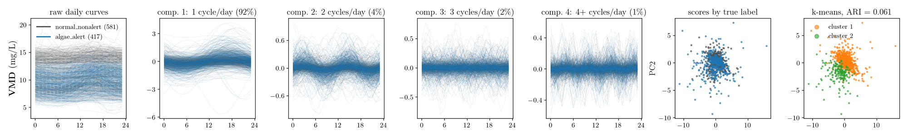
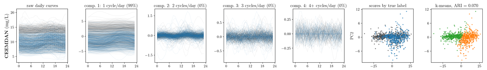
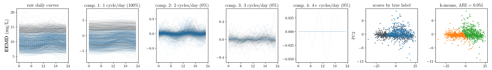
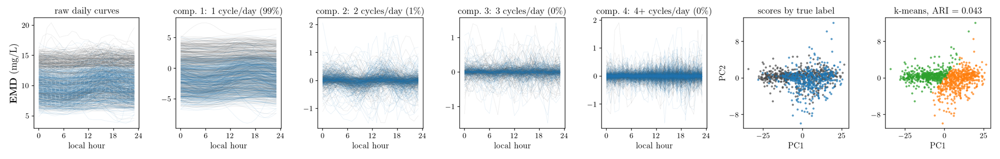
SOUTH RIVER AT FORREST PARK ROAD, AT ATLANTA, GA (Georgia (GA) · Atlanta-Sandy Springs-Roswell, GA 대도시권) — DO · 사건 «강우 유출 · 홍수 유입» 368일 / 대조 «기저 유출 평수기» 384일 · ARI — 3.1 상한 0.103 · 3.2 FPCA 0.077 · 5.1 VMD 0.203 · 5.1 CEEMDAN 0.064 · 5.1 EEMD 0.081 · 5.1 EMD 0.031
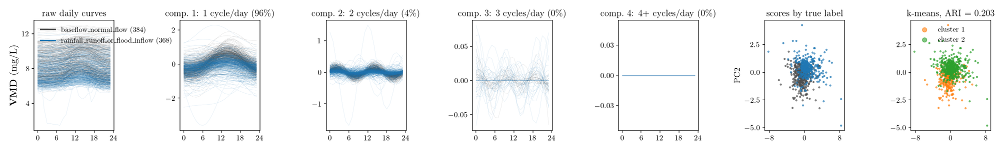
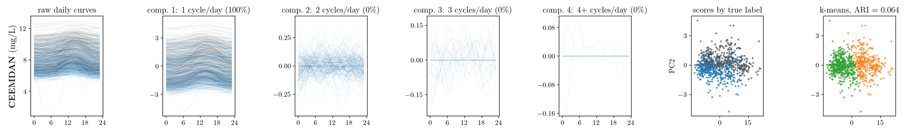
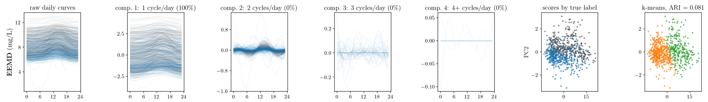
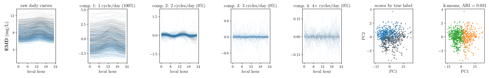
대구 (대구광역시) — 기온 · 사건 «폭염 · 열대야» 226일 / 대조 «비폭염» 1598일 · ARI — 3.1 상한 0.801 · 3.2 FPCA 0.082 · 5.1 VMD -0.004 · 5.1 CEEMDAN 0.083 · 5.1 EEMD 0.074 · 5.1 EMD 0.075
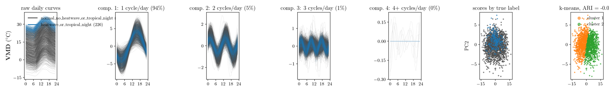
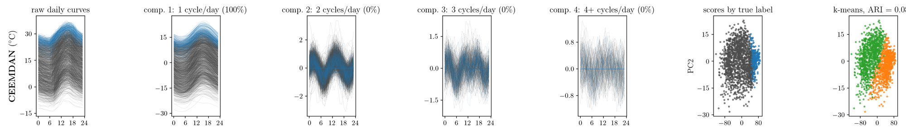
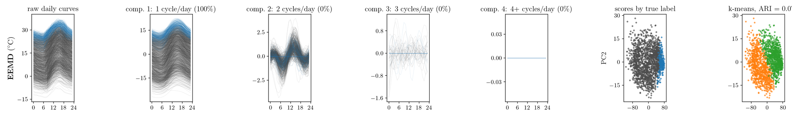
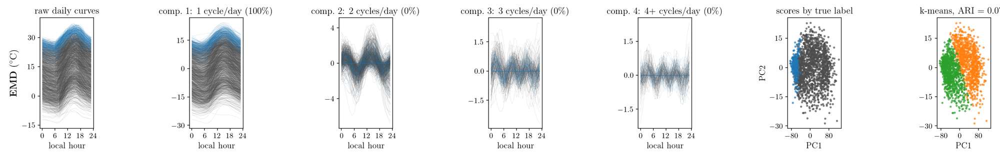
광주 (전남광주통합특별시) — 기온 · 사건 «강우 · 흐림» 699일 / 대조 «맑음» 688일 · ARI — 3.1 상한 0.032 · 3.2 FPCA 0.125 · 5.1 VMD 0.492 · 5.1 CEEMDAN 0.167 · 5.1 EEMD 0.143 · 5.1 EMD 0.113
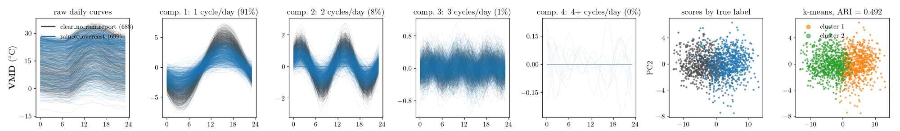
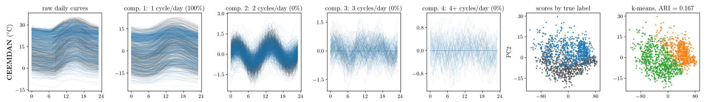
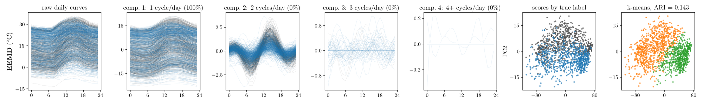
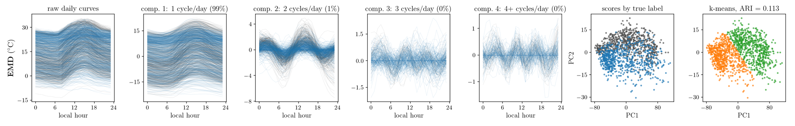
Portland International (OR / Portland-Vancouver-Hillsboro, OR-WA) — 기온 · 사건 «한랭 전선 · 강수» 548일 / 대조 «고온 건조» 373일 · ARI — 3.1 상한 0.874 · 3.2 FPCA 0.927 · 5.1 VMD 0.911 · 5.1 CEEMDAN 0.923 · 5.1 EEMD 0.911 · 5.1 EMD 0.919
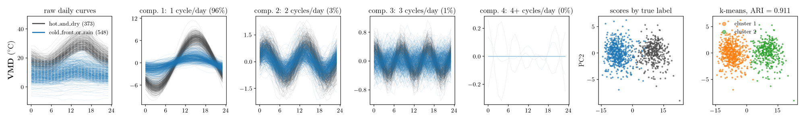
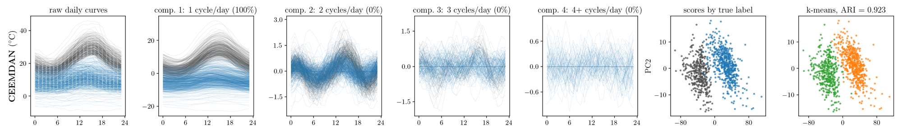
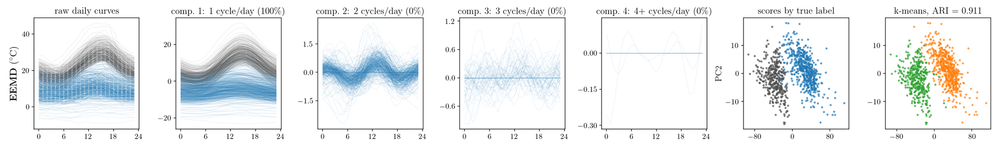
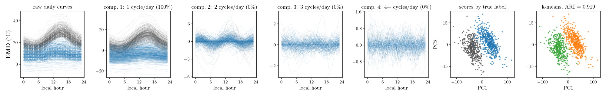
4. 어블레이션
- 센 지점 · 같은 날 · 같은 라벨 · 같은 통째 분해에서 §5.1 의 부품을 한 번에 하나씩 뺌. 값은 평균 ARI, 괄호는 §5.1 대비 평균 차. 빨강 = 열마다 가장 높은 것.
요약
- 어블레이션 (2,101곳 평균): 재배치를 끄면 EMD 계열이 0.156–0.167 떨어짐 (VMD 는 −0.006). 다변량 · 칸 가중치 · 에너지 자르기는 꺼도 차가 ±0.003 안.
- 분해와 표준화는 자료마다 방향이 갈림. 분해를 끄면 (= FPCA) VMD 가 에어코리아 +0.251 · 폭염 +0.058 이지만 ASOS ② −0.221 · ISD −0.105 · WEIS −0.069 · USGS −0.039. 표준화를 끄면 에어코리아는 네 분해 모두 +0.07 안팎, ASOS ② 는 EMD 계열이 −0.125 ~ −0.160. 어블레이션 표의 평균은 지점이 많은 에어코리아 · EPA · USGS 가 정함.
전체 — 2,101곳
| 바꾼 것 | VMD | CEEMDAN | EEMD | EMD |
|---|---|---|---|---|
| 제안 그대로 (§5.1) | 0.158 | 0.222 | 0.227 | 0.198 |
| 재배치 끄기 — IMF 를 에너지 순서대로 넣음 (= §3.3, M = 3) | 0.152 (-0.006) | 0.055 (-0.167) | 0.067 (-0.160) | 0.042 (-0.156) |
| 분해 끄기 — 원곡선 FPCA (= §3.2) | \(\color{red}{0.222}\) (+0.064) | 0.222 (-0.000) | 0.222 (-0.005) | \(\color{red}{0.222}\) (+0.024) |
| 다변량 끄기 — 1 cycle/day 칸 하나만 | 0.158 (+0.000) | 0.223 (+0.001) | 0.229 (+0.002) | 0.200 (+0.002) |
| 칸 가중치 끄기 — 가중 1 | 0.159 (+0.001) | 0.223 (+0.000) | 0.229 (+0.002) | 0.201 (+0.003) |
| 에너지 자르기 끄기 — IMF 전부 | 0.158 (-0.000) | 0.222 (-0.000) | 0.226 (-0.001) | 0.201 (+0.002) |
| 표준화 끄기 — 점수 그대로 k-means | 0.185 (+0.027) | \(\color{red}{0.239}\) (+0.017) | \(\color{red}{0.248}\) (+0.021) | 0.217 (+0.019) |
- 전체 평균은 지점이 많은 에어코리아 · EPA · USGS 가 정함 — 자료마다는 아래.
자료마다
| 바꾼 것 | VMD | CEEMDAN | EEMD | EMD |
|---|---|---|---|---|
| 제안 그대로 (§5.1) | 0.260 | 0.514 | 0.524 | 0.469 |
| 재배치 끄기 — IMF 를 에너지 순서대로 넣음 (= §3.3, M = 3) | 0.243 (-0.017) | 0.049 (-0.465) | 0.065 (-0.459) | 0.036 (-0.433) |
| 분해 끄기 — 원곡선 FPCA (= §3.2) | \(\color{red}{0.512}\) (+0.251) | 0.512 (-0.002) | 0.512 (-0.012) | 0.512 (+0.043) |
| 다변량 끄기 — 1 cycle/day 칸 하나만 | 0.267 (+0.007) | 0.514 (+0.000) | 0.528 (+0.004) | 0.472 (+0.004) |
| 칸 가중치 끄기 — 가중 1 | 0.270 (+0.010) | 0.514 (+0.000) | 0.525 (+0.001) | 0.472 (+0.003) |
| 에너지 자르기 끄기 — IMF 전부 | 0.260 (+0.000) | 0.514 (+0.000) | 0.526 (+0.003) | 0.475 (+0.006) |
| 표준화 끄기 — 점수 그대로 k-means | 0.333 (+0.073) | \(\color{red}{0.585}\) (+0.071) | \(\color{red}{0.598}\) (+0.074) | \(\color{red}{0.537}\) (+0.068) |
| 바꾼 것 | VMD | CEEMDAN | EEMD | EMD |
|---|---|---|---|---|
| 제안 그대로 (§5.1) | 0.077 | 0.074 | 0.083 | 0.061 |
| 재배치 끄기 — IMF 를 에너지 순서대로 넣음 (= §3.3, M = 3) | 0.073 (-0.004) | 0.035 (-0.038) | 0.069 (-0.014) | 0.043 (-0.018) |
| 분해 끄기 — 원곡선 FPCA (= §3.2) | 0.076 (-0.001) | 0.076 (+0.002) | 0.076 (-0.007) | \(\color{red}{0.076}\) (+0.015) |
| 다변량 끄기 — 1 cycle/day 칸 하나만 | 0.071 (-0.006) | 0.075 (+0.001) | 0.083 (-0.000) | 0.062 (+0.001) |
| 칸 가중치 끄기 — 가중 1 | 0.076 (-0.001) | 0.074 (+0.001) | 0.086 (+0.003) | 0.063 (+0.002) |
| 에너지 자르기 끄기 — IMF 전부 | 0.077 (-0.000) | 0.073 (-0.000) | 0.082 (-0.001) | 0.060 (-0.000) |
| 표준화 끄기 — 점수 그대로 k-means | \(\color{red}{0.089}\) (+0.012) | \(\color{red}{0.081}\) (+0.007) | \(\color{red}{0.094}\) (+0.011) | 0.072 (+0.011) |
| 바꾼 것 | VMD | CEEMDAN | EEMD | EMD |
|---|---|---|---|---|
| 제안 그대로 (§5.1) | 0.244 | 0.335 | 0.480 | 0.402 |
| 재배치 끄기 — IMF 를 에너지 순서대로 넣음 (= §3.3, M = 3) | 0.297 (+0.053) | 0.143 (-0.193) | -0.025 (-0.505) | -0.010 (-0.412) |
| 분해 끄기 — 원곡선 FPCA (= §3.2) | \(\color{red}{0.419}\) (+0.175) | 0.419 (+0.083) | 0.419 (-0.061) | 0.419 (+0.017) |
| 다변량 끄기 — 1 cycle/day 칸 하나만 | 0.297 (+0.053) | 0.335 (+0.000) | 0.480 (+0.000) | 0.402 (+0.000) |
| 칸 가중치 끄기 — 가중 1 | 0.297 (+0.053) | \(\color{red}{0.515}\) (+0.180) | 0.415 (-0.065) | 0.402 (+0.000) |
| 에너지 자르기 끄기 — IMF 전부 | 0.244 (+0.000) | 0.335 (+0.000) | 0.480 (+0.000) | 0.402 (+0.000) |
| 표준화 끄기 — 점수 그대로 k-means | 0.401 (+0.157) | 0.510 (+0.174) | \(\color{red}{0.736}\) (+0.256) | \(\color{red}{0.455}\) (+0.053) |
| 바꾼 것 | VMD | CEEMDAN | EEMD | EMD |
|---|---|---|---|---|
| 제안 그대로 (§5.1) | 0.133 | 0.044 | 0.033 | 0.026 |
| 재배치 끄기 — IMF 를 에너지 순서대로 넣음 (= §3.3, M = 3) | 0.152 (+0.019) | 0.058 (+0.014) | 0.029 (-0.005) | 0.033 (+0.007) |
| 분해 끄기 — 원곡선 FPCA (= §3.2) | 0.064 (-0.069) | 0.064 (+0.021) | \(\color{red}{0.064}\) (+0.031) | \(\color{red}{0.064}\) (+0.038) |
| 다변량 끄기 — 1 cycle/day 칸 하나만 | \(\color{red}{0.154}\) (+0.020) | \(\color{red}{0.066}\) (+0.023) | 0.034 (+0.000) | 0.026 (-0.000) |
| 칸 가중치 끄기 — 가중 1 | 0.131 (-0.002) | 0.044 (+0.000) | 0.033 (-0.000) | 0.027 (+0.002) |
| 에너지 자르기 끄기 — IMF 전부 | 0.133 (+0.000) | 0.044 (+0.000) | 0.032 (-0.002) | 0.028 (+0.002) |
| 표준화 끄기 — 점수 그대로 k-means | 0.064 (-0.069) | 0.036 (-0.008) | 0.029 (-0.005) | 0.025 (-0.001) |
| 바꾼 것 | VMD | CEEMDAN | EEMD | EMD |
|---|---|---|---|---|
| 제안 그대로 (§5.1) | 0.134 | 0.096 | 0.088 | 0.078 |
| 재배치 끄기 — IMF 를 에너지 순서대로 넣음 (= §3.3, M = 3) | 0.135 (+0.001) | 0.073 (-0.023) | 0.054 (-0.035) | 0.042 (-0.035) |
| 분해 끄기 — 원곡선 FPCA (= §3.2) | 0.095 (-0.039) | 0.095 (-0.001) | \(\color{red}{0.095}\) (+0.006) | \(\color{red}{0.095}\) (+0.017) |
| 다변량 끄기 — 1 cycle/day 칸 하나만 | 0.135 (+0.001) | \(\color{red}{0.098}\) (+0.002) | 0.090 (+0.002) | 0.078 (+0.000) |
| 칸 가중치 끄기 — 가중 1 | 0.130 (-0.004) | 0.095 (-0.001) | 0.091 (+0.002) | 0.081 (+0.003) |
| 에너지 자르기 끄기 — IMF 전부 | 0.134 (-0.000) | 0.095 (-0.001) | 0.083 (-0.005) | 0.079 (+0.002) |
| 표준화 끄기 — 점수 그대로 k-means | \(\color{red}{0.135}\) (+0.001) | 0.070 (-0.026) | 0.071 (-0.017) | 0.059 (-0.019) |
| 바꾼 것 | VMD | CEEMDAN | EEMD | EMD |
|---|---|---|---|---|
| 제안 그대로 (§5.1) | 0.001 | 0.073 | \(\color{red}{0.073}\) | 0.045 |
| 재배치 끄기 — IMF 를 에너지 순서대로 넣음 (= §3.3, M = 3) | 0.000 (-0.001) | -0.003 (-0.076) | 0.015 (-0.058) | 0.002 (-0.043) |
| 분해 끄기 — 원곡선 FPCA (= §3.2) | \(\color{red}{0.059}\) (+0.058) | 0.059 (-0.014) | 0.059 (-0.014) | \(\color{red}{0.059}\) (+0.014) |
| 다변량 끄기 — 1 cycle/day 칸 하나만 | 0.001 (-0.001) | 0.070 (-0.003) | 0.052 (-0.021) | 0.019 (-0.026) |
| 칸 가중치 끄기 — 가중 1 | 0.001 (-0.000) | \(\color{red}{0.074}\) (+0.001) | 0.049 (-0.024) | 0.028 (-0.017) |
| 에너지 자르기 끄기 — IMF 전부 | 0.001 (+0.000) | 0.073 (-0.000) | 0.070 (-0.003) | 0.048 (+0.003) |
| 표준화 끄기 — 점수 그대로 k-means | 0.003 (+0.002) | 0.002 (-0.071) | -0.002 (-0.075) | -0.002 (-0.048) |
| 바꾼 것 | VMD | CEEMDAN | EEMD | EMD |
|---|---|---|---|---|
| 제안 그대로 (§5.1) | \(\color{red}{0.413}\) | 0.199 | 0.188 | 0.162 |
| 재배치 끄기 — IMF 를 에너지 순서대로 넣음 (= §3.3, M = 3) | 0.391 (-0.022) | 0.022 (-0.178) | 0.065 (-0.124) | 0.042 (-0.120) |
| 분해 끄기 — 원곡선 FPCA (= §3.2) | 0.192 (-0.221) | 0.192 (-0.007) | 0.192 (+0.004) | \(\color{red}{0.192}\) (+0.030) |
| 다변량 끄기 — 1 cycle/day 칸 하나만 | 0.410 (-0.003) | \(\color{red}{0.202}\) (+0.003) | 0.188 (-0.001) | 0.158 (-0.004) |
| 칸 가중치 끄기 — 가중 1 | 0.202 (-0.210) | 0.199 (+0.000) | \(\color{red}{0.199}\) (+0.011) | 0.158 (-0.005) |
| 에너지 자르기 끄기 — IMF 전부 | \(\color{red}{0.413}\) (+0.000) | 0.199 (-0.000) | 0.191 (+0.003) | 0.159 (-0.004) |
| 표준화 끄기 — 점수 그대로 k-means | 0.406 (-0.007) | 0.039 (-0.160) | 0.039 (-0.149) | 0.038 (-0.125) |
| 바꾼 것 | VMD | CEEMDAN | EEMD | EMD |
|---|---|---|---|---|
| 제안 그대로 (§5.1) | 0.358 | 0.255 | \(\color{red}{0.269}\) | 0.263 |
| 재배치 끄기 — IMF 를 에너지 순서대로 넣음 (= §3.3, M = 3) | \(\color{red}{0.361}\) (+0.003) | 0.230 (-0.025) | 0.215 (-0.054) | 0.115 (-0.148) |
| 분해 끄기 — 원곡선 FPCA (= §3.2) | 0.253 (-0.105) | 0.253 (-0.002) | 0.253 (-0.015) | 0.253 (-0.010) |
| 다변량 끄기 — 1 cycle/day 칸 하나만 | 0.357 (-0.001) | 0.253 (-0.003) | 0.264 (-0.005) | 0.263 (-0.000) |
| 칸 가중치 끄기 — 가중 1 | 0.355 (-0.003) | \(\color{red}{0.256}\) (+0.000) | 0.269 (-0.000) | 0.268 (+0.005) |
| 에너지 자르기 끄기 — IMF 전부 | 0.358 (+0.000) | 0.255 (-0.000) | 0.267 (-0.002) | \(\color{red}{0.269}\) (+0.006) |
| 표준화 끄기 — 점수 그대로 k-means | 0.355 (-0.003) | 0.218 (-0.037) | 0.218 (-0.050) | 0.205 (-0.059) |
5. 지역 라벨 — 지점 짝
문서의 라벨 대신 «어느 지점의 날인가» 를 라벨로 씀 (라벨 = 지점). 한 자료 안에서 같은 변수의 두 지점을 무작위로 짝지어 (지점마다 한 번 · 겹치는 완전한 날 365 이상) 두 지점 다 하루가 온전히 관측된 날만 씀 — 두 쪽의 날 수와 계절이 같음. 1,003짝 · 2,006지점. 모양만 = 그날 평균을 뺌. §3.3 은 뺌 (지점마다 따로 분해한 IMF 를 번호로 짝지으면 주기가 어긋남). 한국–미국 짝 (OpenAQ 1개) · 알래스카와 하와이–본토 짝 · 푸에르토리코 짝은 지도에 없음 (표에는 있음).
점 = 짝, 선 = 거리 칸 평균 (괄호 안은 짝 수).
계산 — 교수님 라벨: 지점마다 통째 신호를 분해한 뒤 §3.1 · §3.2 · §5.1 을 돌림 (R, 지난 리포트와 같은 코드 · 261014_하모니_실자료전체.R · 어블레이션 261014_하모니_어블레이션.R). 지역 라벨: 같은 분해를 두 지점 짝에 다시 씀 (261015_하모니_지역라벨.R). 3절 그림 261014_아리아_실자료4x7그림.py --tag 교수님라벨_전지점 (아리아). 지도 밑그림은 Natural Earth (world-atlas 2.0.2 · us-atlas 3.0.1).